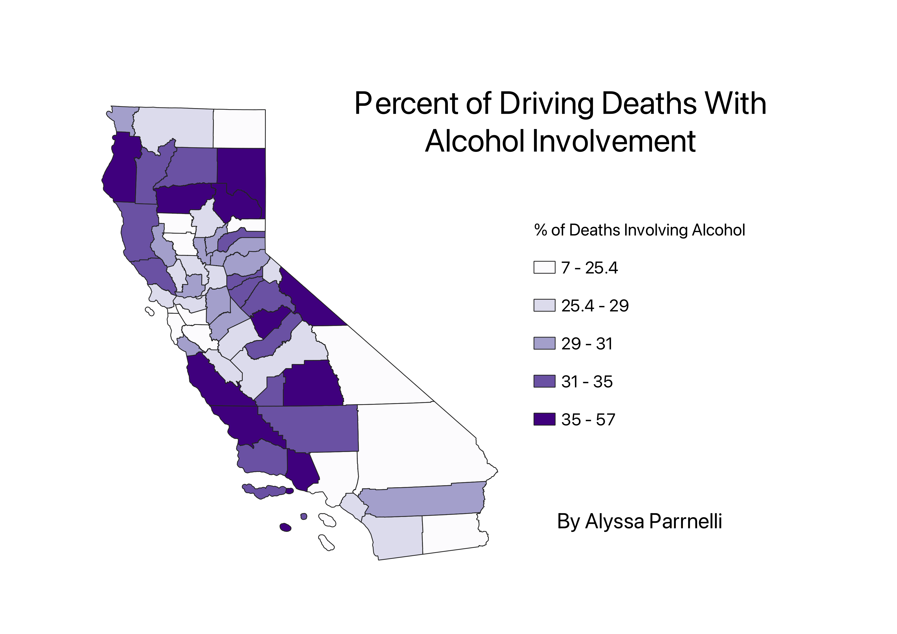

Homework 7: California Alcohol Related Driving Deaths
Alyssa Parrnelli
Ratio Choropleth

This choropleth shows the mean income by county in California in 2021 inflation-adjusted dollars.
The lighter the color of the county, the lower the mean income.
This dataset had income data for every county, the csv just had to be cleaned and columns with other income information removed.
This map shows patterns of mean income in the state and is viewed in the California state projection 3310.
Data used for this project
Cleaned CSV dataset
CSV dataset link
Link to geoJSON in local projection